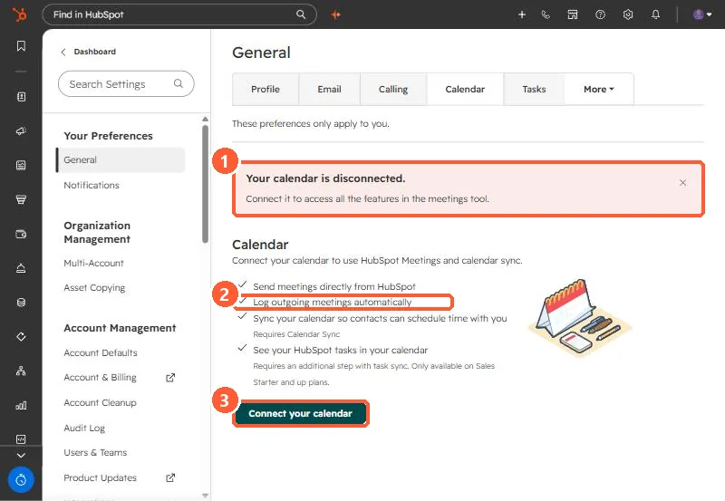

Short answer
HubSpot's calendar sync only logs a meeting on contacts that already exist and whose email matches the guest's, and for recurring meetings it syncs the next five upcoming events, up to a year ahead. In an agency audit, every missing client meeting belonged to an older recurring series, which looked like a pattern until one user's sync picked up her older series too. For another user the series had been created by a colleague and later split, and it only logged while that colleague attended. The plan was to reconnect her calendar and recreate the series from her own calendar, testing one before the rest.
1. What HubSpot's calendar sync does
- A meeting from your connected calendar only logs on contacts that already exist in HubSpot. It does not create contacts.
- The guest must use the same email that is in the contact's Email property.
- For recurring meetings, HubSpot syncs the next five upcoming events in the series, up to a year in advance.
- Never log lists apply to meetings from calendar sync. When several HubSpot users are on a meeting, the meeting owner's personal never log list decides.
Each user connects their own calendar under Settings, General, Calendar. My demo login is disconnected, which is what you see before the first connection.


2. What we checked in the audit
- Missing contacts. Nearly every client attendee already existed as a contact, so that was not it.
- Old recurring series. All the missing meetings for two users belonged to series created months or years earlier, while recent one-off meetings had logged. That looked like the answer.
- The counterexample. A third user's sync then picked up her older series, so "old series never sync" was not a rule.
- Who owns the series. One user's client series had been created by a colleague and split mid-month. It only logged while that colleague attended.
3. The fix we chose
Reconnect the user's calendar and recreate her client series from her own calendar, so a synced user owns them. Test one series against an upcoming meeting before recreating the rest. I did not see the result of that test before writing this, so treat it as the plan, not a confirmed fix.
Related: recordings that land with no company and the never log list.